urllib2提供了比urllib更丰富的功能
1）urllib2.Resquest -提供http header定制能力，Resquest能够更好的表达请求。
2）提供更强大的功能，包括cookie处理，鉴权，可定制化等一系列http高级的特性。
urllib2能不能完全替代urllib？
答案是不能，因为url里面有一个很重要的函数urllib.urlencode，这个是在urllib2里面是没有的，所以我们一般都是urllib和urllib2混用。
1）urllib2.urlopen（）
这个在urllib里面也有，唯一的就是加了一个timeout参数
a.url
b.data
c.timeout：超时时间，比如我设置了一个超时时间3秒，那么我3秒内连接不到远程的服务器，它就会直接报错
3）错误处理HTTPEorre,e
4）示例：urlopen
超时示例：
# -*- coding: utf-8 -*-
import urllib2
def urlopen():
url = 'http://blog.kamidox.com'
s = urllib2.urlopen(url, timeout=3) //超时时间3秒
print(s.read(100)) //打印出100字节
if __name__ == '__main__':
urlopen()
运行结果，当然，因为这个网络协议很快，它实际上没有超时
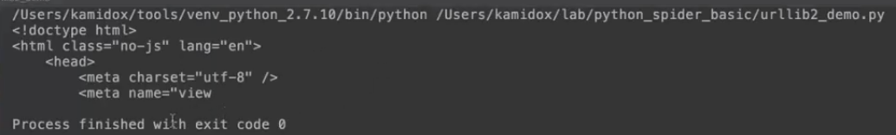
我们这里换一个不存在的url，代码如下：
# -*- coding: utf-8 -*-
import urllib2
def urlopen():
url = 'http://blog.kamidox.comno-exist'
s = urllib2.urlopen(url, timeout=3) //超时时间3秒
print(s.read(100)) //打印出100字节
if __name__ == '__main__':
urlopen()
运行结果，报错了404
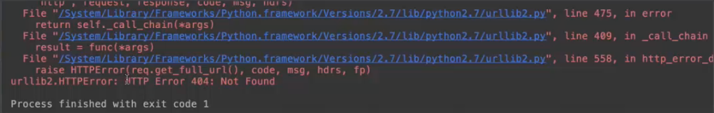
我们如何来捕获这个错误呢？我们可以用Python里面的try except
# -*- coding: utf-8 -*-
import urllib2
def urlopen():
url = 'http://blog.kamidox.comno-exist'
try:
s = urllib2.urlopen(url, timeout=3) //超时时间3秒
except urllib2.HTTPError, e:
print(e)
else:
print(s.read(100)) //打印出100字节
s.close()
if __name__ == '__main__':
urlopen()
运行结果，这次结果没有报错，只是把这个结果打印出来而已
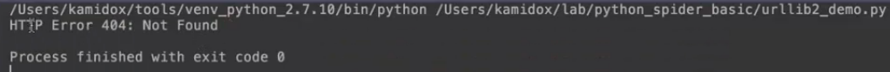
可以让我们去定制http的请求
1.urllib2.Request()
1）url
2）data-optional
3）headers-字典，我们可以用字典来定制http的头
2.使用Request添加或修改http头
1）Accept:application/json
2）Content-Type:application/json
3）User-Agent:Chorme
示例：request
# -*- coding: utf-8 -*-
import urllib2
def request():
# 定制 HTTP 头
headers = {'User-Agent': 'Mozilla/5.0', 'x-my-header': 'my value'} //在http里面自定义的头一般是x开头的
req = urllib2.Request('http://blog.kamidox.com', headers=headers) //创建一个请求
s = urllib2.urlopen(req) //打开这个请求，urlopen不仅仅可以接受一个网址作为参数，也可以接受request作为它的对象
print(s.read(100))
s.close()
if __name__ == '__main__':
request()
运行结果，这个就是通过定制的http头
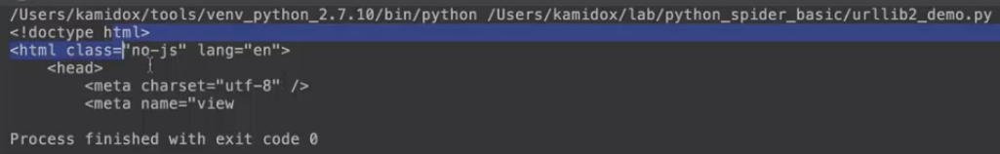
修改代码，打印这个头
# -*- coding: utf-8 -*-
import urllib2
def request():
# 定制 HTTP 头
headers = {'User-Agent': 'Mozilla/5.0', 'x-my-header': 'my value'} //在http里面自定义的头一般是x开头的
req = urllib2.Request('http://blog.kamidox.com', headers=headers) //创建一个请求
s = urllib2.urlopen(req) //打开这个请求，urlopen不仅仅可以接受一个网址作为参数，也可以接受request作为它的对象
print(s.read(100))
print(req.headers)//打印这个头
s.close()
if __name__ == '__main__':
request()
运行结果，这就就是我们打印的头，我们定制了两个头
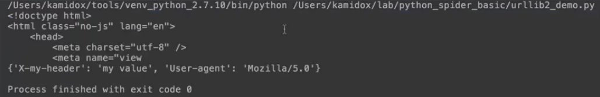
可以让我们去定制这个http的行为
1）BeseHandler及其子类
BeseHandler是所有HTTPHandler的父类
a.HTTPHandler（处理http请求的）
b.HTTPSHandler（处理安全链接的请求）
c.HTTPCookieProcessor（处理cookie的请求）
2）bulid-opener
a.返回Handler列表，会把这个Handler都给它串起来，串起来以后，就类似于我们管道一样，当http请求应答回来的时候，它会流经这个Handler，让这个里面每一个Handler去处理不同的东西
b.返回OpenerDirector，这个参数很重要的方法就是open，这个open就是要去打开这个远程的链接去处理这个数
3）默认会创建的Handler链
Handler的链，实际上是一个Handler的数组，在调用这个urlOpener的时候，它默认的时候会是以下的链表，也就是，它会默认的把这个链表给你创建起来
a.ProxyHandler（如果设置了代理）
b.UnknownHandler（不知道什么协议的时候，它会去调）
d.HTTPHandler（处理http的请求）
c.HTTPDefaultEorrorHandler（处理错误的请求）
d.HTTPRedirectHandler（处理跳转，比如http出现301,302这种应答码的时候）
e.FTPHandler（可以去支持FTP的协议）
f.FileHandler（可以支持本地的文件打开）
g.HTTPEorrorProcessor（可以去处理http的错误）
e.HTTPSHandler（如果安装了ssl模块）
示例：
# -*- coding: utf-8 -*-
import urllib2
import urllib
def request_post_debug():
# POST
data = {'username': 'kamidox', 'password': 'xxxxxxxx'} //数据体
# headers = {'User-Agent': 'Mozilla/5.0', 'Content-Type': 'plain/text'}
headers = {'User-Agent': 'Mozilla/5.0'} //定制的头
req = urllib2.Request('http://www.douban.com', data=urllib.urlencode(data), headers=headers) //创建一个请求，这个请求是发送给豆瓣
opener = urllib2.build_opener(urllib2.HTTPHandler(debuglevel=1)) //创建一个open打开器，如果不传参数，它就是给你传系统默认的Handler，如果我们传了参数给它，如果系统里面默认有的它就去去替换掉，如果系统没有它就去去添加
s = opener.open(req) //用这个open去打开这个请求
print(s.read(100)) //打印前面100个字节
s.close()
if __name__ == '__main__':
Request_post_debug()
运行结果，debuglevel=1有这样一个好处，就是它会把这个交互的数据打印出来，reply就表示服务器返回的，这个http状态行里面有个200ok，表示这是个成功的应答，header就是服务器返回的所有的头字段
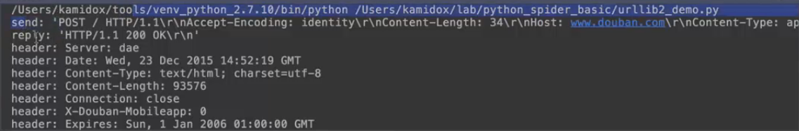
打印的前面100个字节
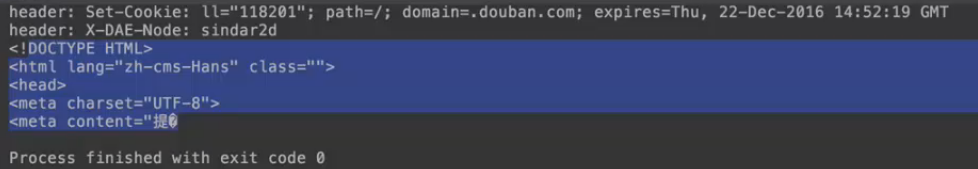
如果我创建了一个opener，那我后面的函数还想用该怎么办呢？怎么将这个opener保存起来呢？
保存opener为默认
1.urllib2.install_opener （我们可以把创建处理的opener，给它保存到urllib2这个库里面，调用urllib2的时候，就会直接去下载安装这个opener了）
2.示例：install_debug_opener
示例：Request_post_debug
1.打印http调试信息
2.POST数据
# -*- coding: utf-8 -*-
import urllib2
def request():
# 定制 HTTP 头
headers = {'User-Agent': 'Mozilla/5.0', 'x-my-header': 'my value'}
req = urllib2.Request('http://blog.kamidox.com', headers=headers)
s = urllib2.urlopen(req)
print(s.read(100))
print(req.headers)
s.close()
def request_post_debug():
# POST
data = {'username': 'kamidox', 'password': 'xxxxxxxx'}
# headers = {'User-Agent': 'Mozilla/5.0', 'Content-Type': 'plain/text'}
headers = {'User-Agent': 'Mozilla/5.0'}
req = urllib2.Request('http://www.douban.com', data=urllib.urlencode(data), headers=headers)
opener = urllib2.build_opener(urllib2.HTTPHandler(debuglevel=1))
s = opener.open(req)
print(s.read(100))
s.close()
def install_debug_handler():
opener = urllib2.build_opener(urllib2.HTTPHandler(debuglevel=1),
urllib2.HTTPSHandler(debuglevel=1))//这里能处理HTTP协议和HTTPS协议
urllib2.install_opener(opener) //将Handler安装到系统默认区，要打开的就是我们这里要安装的opener
if __name__ == '__main__':
install_debug_handler()
request()
运行结果，经过我们安装了调试handler之后，它打印的信息就多了，它发送的信息，后面还有服务器返回的头
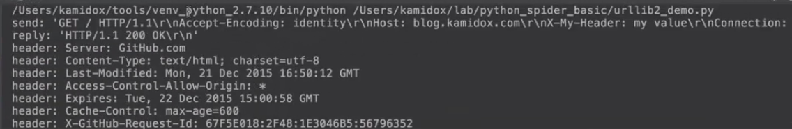
Cookies：由服务器生成，并保存在客户端的，客户端在请求的时候直接把它copy给服务器解析，上次我们也介绍过，登录一个网站实际上就是服务器把cookies保存给客户端，客户端会凭借这个cookies来保证它可以登录上去。
1）cookieillib.CookieJar
提供解析并保存cookie的接口，因为cookie有些有生命周期，还有很多参数，这个类就是提供这些cookie的处理。
2）HTTPCookieProcessor
提供自动处理cookie的功能，它的父类也是BeseHandler，所以我们可以把这个cookie串起来，这样就可以处理一些信息。
3）演示访问douban的cookie传输过程
4）示例：handle_cookies
示例：
# -*- coding: utf-8 -*-
import urllib2
def handle_cookie(): //先定义一个处理cookie的信息
cookiejar = cookielib.CookieJar() //先串联一个CookieJar的对象
handler = urllib2.HTTPCookieProcessor(cookiejar=cookiejar) //创建一个HTTPCookieProcessor的对象，传入一个参数CookieJar进去
opener = urllib2.build_opener(handler, urllib2.HTTPHandler(debuglevel=1))//还需要创建一个新的handler，打印出它的调试信息
s = opener.open('http://www.douban.com')
print(s.read(100))
s.close()
if __name__ == '__main__':
handle_cookie()
运行结果，这个应答里面有一个set_cookie，有一个bid
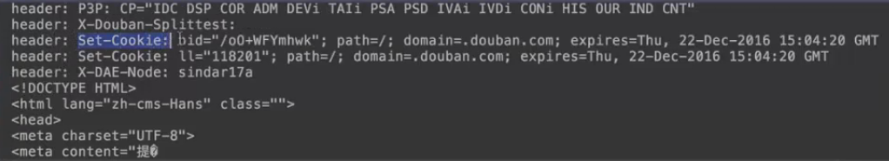
在收到这个请求之后，我们的CookieJar，包含这些服务器返回的cookie，我们可以把它打印出来。代码如下：
# -*- coding: utf-8 -*-
import urllib2
def handle_cookie(): //先定义一个处理cookie的信息
cookiejar = cookielib.CookieJar() //先串联一个CookieJar的对象
handler = urllib2.HTTPCookieProcessor(cookiejar=cookiejar) //创建一个HTTPCookieProcessor的对象，传入一个参数CookieJar进去
opener = urllib2.build_opener(handler, urllib2.HTTPHandler(debuglevel=1))//还需要创建一个新的handler，打印出它的调试信息
s = opener.open('http://www.douban.com')
print(s.read(100))
s.close()
print('=' * 80)
print(cookiejar._cookies) //这个属性就是服务器所有的cookie
print('=' * 80)
if __name__ == '__main__':
handle_cookie()
运行结果，我们可以看到，这中间就是打印出来的cookie。我们的opener实际上是带着这些cookie信息的，那我下次再发一个请求过去的时候，它会把这个cookie也发送过去。
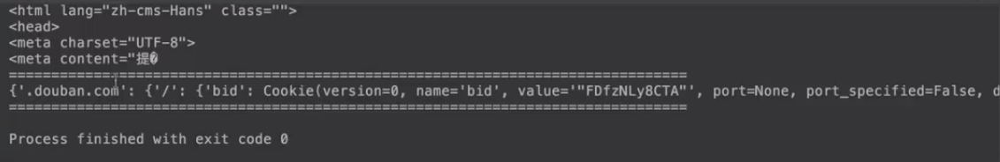
我们再创建一个请求，代码如下：
# -*- coding: utf-8 -*-
import urllib2
def handle_cookie(): //先定义一个处理cookie的信息
cookiejar = cookielib.CookieJar() //先串联一个CookieJar的对象
handler = urllib2.HTTPCookieProcessor(cookiejar=cookiejar) //创建一个HTTPCookieProcessor的对象，传入一个参数CookieJar进去
opener = urllib2.build_opener(handler, urllib2.HTTPHandler(debuglevel=1))//还需要创建一个新的handler，打印出它的调试信息
s = opener.open('http://www.douban.com')
print(s.read(100))
s.close()
print('=' * 80)
print(cookiejar._cookies) //这个属性就是服务器所有的cookie
print('=' * 80)
s = opener.open('http://www.douban.com')
s.close()
if __name__ == '__main__':
handle_cookie()
运行结果，可以看到最后一个请求里面是带了cookie的，也就是说，把我们上一次服务器请求让我们保存的cookie在第二个请求里面它会发出去。这里实际上是两个cookie，但是相比之下，第一个就不带cookie
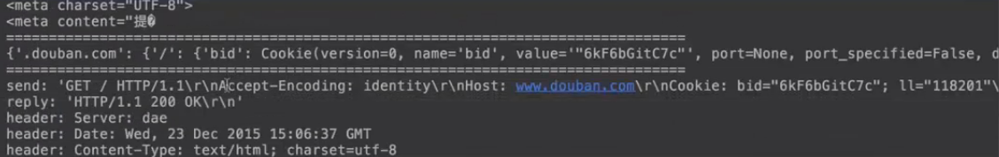
5）问题思考，用cookie来模拟登录
第一步，我们需要把用户名和密码post给服务器，拿去做一个登录，登录完了之后，这次的请求返回的应答就会包括作为我们登录的凭证cookie，在第二次登录的时候，我们的urllib2就会自动把登录在客户端的凭证cookie发送给服务器，这样服务器就认为我们已经登录成功了，当然，这里的登录还有很多问题，比如说很多网站会提供一个验证码。
【本文由麦子学院独家原创，转载请注明出处并保留原文链接】